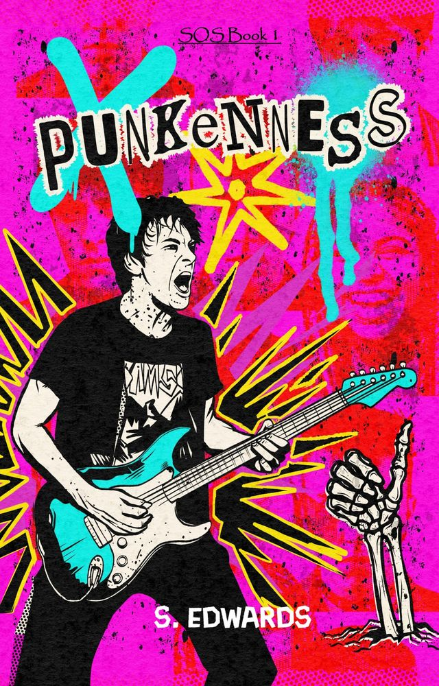

Punkenness
SOS Book 1. Out now.
Tom has his future all planned out: first, he'll smash his A-Levels, then he'll read English at Oxford University and be a Booker Prize winning author by the time he turns 30.
But when a young punk with dazzling blue eyes and an aversion to education is seated next to him in class, an unlikely friendship blossoms.
Persuaded to tour the UK with his new friend's band over the summer, Tom experiences danger, true friendship and freedom for the first time, forcing him to question everything he knows about the world and his future in it.
For fans of Heartstopper and the cult classic film Almost Famous.
This book features recreational drug use. It is not recommended for young readers.